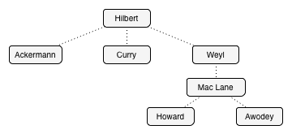
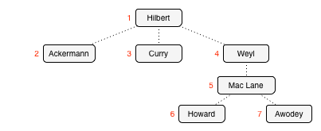

```tut:invisible import atto._, Atto._, atto.compat.scalaz._ import scalaz._, Scalaz.{ char => _, _ }, scalaz.effect._ import doobie.imports._ import doobie.contrib.postgresql.pgtypes._ import doobie.tsql._ import doobie.tsql.postgres._ object Extras extends Extras import Extras._ import cofree.xa ``` class: center, middle <h1>Pure Functional Database Programming<br>… with Fixpoint Types</h1> Rob Norris • `@tpolecat` • Gemini Observatory 13 Nov 2016 • Scala by the Bay ??? - Hi, I'm Rob. - I write software for big telescopes (in Scala) and I also work on some open-source projects including a few that we'll talk about today. - So before we get started, if you don't mind admitting it, how many of you have used scalaz or cats? Were any of you in John's Cofree talk yesterday? Greg's talk on Matryoshka? - So today I want to talk about some odds and ends that I think are interesting, and we'll see if you find them interesting too. --- # Goals 1. Gain an intuition about some simple **recursive types**. 2. Learn a little bit about **doobie**, a pure functional JDBC layer for Scala. 3. Gain some confidence pushing on code to see what happens. 4. Do not panic. ??? 1. --- These types seem to be pretty well known in the Haskell community but not so much among Scala programmers, and they're interesting and worth knowing about. 2. --- 3. --- so, this is something I mention from time to time when I give talks and people ask me to say more about it, so I'll try to do that as well. 4. --- Recursion is always mind-blowing at first. Everybody struggles with recursive functions and inductive data types at first, and today we're going to talk about self-referential types, which might be hard to grasp at first. This is ok. I'm going to try to approach it very gradually. If it ends up being too slow for you, I apologize; if it's too fast I also apologize. I'm going to try to split the difference and hopefully for most of you it will work out ok. Ok so let's look at a recursive data type. --- # Recursive Data A recursive data type for professors and their Ph.D. students. ```tut:silent case class Prof( name: String, year: Int, students: List[Prof] ) ```  ??? - ... - So the kind of invented problem I want to talk about is how to store this in a relational database. So how do I save one of these tree structures to a database and read it back? --- # Recursive Data A recursive data type for professors and their Ph.D. students. ```tut:silent case class Prof( name: String, year: Int, students: List[Prof] ) ``` Natural SQL representation: ```sql CREATE TABLE prof ( id INTEGER IDENTITY, parent INTEGER NULL, name VARCHAR NOT NULL, year INTEGER NOT NULL, FOREIGN KEY(parent) REFERENCES prof(id) ) ``` ??? - Here's how you normally want to do it. - ... - You have the child refer to its parent, so the relationship is inverted. So we need to figure out how to manage that difference. - And you also have this id to deal with, and we need a way to represent the id on the Scala side, so let's talk about that first. - Ok so here's one possibility. --- # Recursive Data A recursive data type for professors and their Ph.D. students. ```tut:silent case class Prof( id : Int, name: String, year: Int, students: List[Prof] ) ``` Natural SQL representation. ```sql CREATE TABLE prof ( id INTEGER IDENTITY, parent INTEGER NULL, name VARCHAR NOT NULL, year INTEGER NOT NULL, FOREIGN KEY(parent) REFERENCES prof(id) ) ``` ??? - ... - Ok so what's wrong with this representation for IDs? (new objects) - Also going to get rid of the table definition for now. --- # Recursive Data A recursive data type for professors and their Ph.D. students. ```tut:silent case class Prof( id : Option[Int], name: String, year: Int, students: List[Prof] ) ``` ??? - Ok is this any better? - ... - Maybe a little bit, but I think it's irritating because you tend to have three cases: 1. it's new, and we know it's new 2. it's from the database so we know it has an id 3. we're doing some kind of computation that's only looking at the structure and we don't care about database id And this encoding is irritating in all three cases, so I don't like it. So a way to make the id less invasive is to externalize it. --- # Recursive Data A recursive data type for professors and their Ph.D. students. ```tut:silent case class Prof( name: String, year: Int, students: List[Prof] ) type IdProf = (Int, Prof) ``` ??? - so ... - but the problem now is that the children don't have ids, right? So we have to do this: --- # Recursive Data A recursive data type for professors and their Ph.D. students. ```tut:silent case class Prof( name: String, year: Int, students: List[(Int, Prof)] ) type IdProf = (Int, Prof) ``` ??? - ... Which defeats the purpose of externalizing the ids … the whole point was to not have to talk about them in the model. - Ok so the leap you have to make here is to say ok I don't know what type goes here, so I'm just going to add a type parameter. And this is the trick. This is the part where it starts getting unfamiliar. --- # Recursive Data A ~~recursive~~ data type for professors and their Ph.D. students. ```tut:silent case class ProfF[A]( name: String, year: Int, students: List[A] ) ``` ```tut:silent:fail type Prof = ProfF[ProfF] type IdProf = (Int, ProfF[(Int, ProfF)]) ``` ??? - ok so the data type isn't recursive anymore - And I'm going to call this `ProfF` just to distinguish it from our old `Prof`, so now we can just say ... - right? no, because ProfF has a type parameter --- # Recursive Data A ~~recursive~~ data type for professors and their Ph.D. students. ```tut:silent case class ProfF[A]( name: String, year: Int, students: List[A] ) ``` ```tut:silent:fail type Prof = ProfF[ProfF[ProfF[ProfF[ProfF[ProfF[ProfF[ProfF[ProfF[ProfF[ProfF[ProfF[ProfF[ProfF[ProfF[ProfF[ProfF[ type IdProf = (Int, ProfF[(Int, ProfF[(Int, ProfF[(Int, ProfF[(Int, ProfF[(Int, ProfF[(Int, ProfF[(Int, ProfF[(Int, ``` ??? - so this doesn't work because the types are infinite --- # Recursive Data A ~~recursive~~ data type for professors and their Ph.D. students. ```tut:silent case class ProfF[A]( name: String, year: Int, students: List[A] ) ``` ```tut:silent:fail type Prof = ProfF[Prof] type IdProf = (Int, ProfF[IdProf]) ``` ??? - what if we make the type aliases self-referential? - ok? no. doesn't compile - type aliases can't be recursive. but **classes** can ... --- # Recursive Data A ~~recursive~~ data type for professors and their Ph.D. students. ```tut:silent case class ProfF[A]( name: String, year: Int, students: List[A] ) ``` ```tut:silent case class Prof(value: ProfF[Prof]) case class IdProf(id: Int, value: ProfF[IdProf]) ``` ??? - So what if we make these case classes? Does this work? - So this is cool, we have one representation for our data type, `ProfF`, and depending on how we wrap it we can represent just the pure data *or* the data annotated with database ids. - We could claim victory here because this actually does what we want. - But this is functional programming and we like abstraction, so let's push on this a little it and see if we can generalize it a little bit. - Ok, so there's nothing here's that's specific to ProfF, so let's factor that out. --- # Recursive Data A ~~recursive~~ data type for professors and their Ph.D. students. ```tut:silent case class ProfF[A]( name: String, year: Int, students: List[A] ) ``` ```tut:silent:fail case class Prof[F[_]](value: F[Prof]) case class IdProf[F[_]](id: Int, value: F[IdProf]) ``` ??? - But this doesn't compile because `Prof` needs a type argument, which is ... `F` right? --- # Recursive Data A ~~recursive~~ data type for professors and their Ph.D. students. ```tut:silent case class ProfF[A]( name: String, year: Int, students: List[A] ) ``` ```tut:silent case class Prof[F[_]](value: F[Prof[F]]) case class IdProf[F[_]](id: Int, value: F[IdProf[F]]) ``` ??? - We also note that this doesn't depend on the id being an `Int` so let's factor that out too. --- # Recursive Data A ~~recursive~~ data type for professors and their Ph.D. students. ```tut:silent case class ProfF[A]( name: String, year: Int, students: List[A] ) ``` ```tut:silent case class Prof[F[_]](value: F[Prof[F]]) case class IdProf[F[_], A](id: A, value: F[IdProf[F, A]]) ``` ??? - and we had to add the `A` to the type argument here since `IdProf` now has two type parameters. - Ok, so what do we have now? We have two recursive types that are totally generic; the first one can make any `F` recursive, and the second can make any `F` recursive *and* annotate each value with some arbitrary label. - So we have invented something here that's totally generic and potentially really useful, and when this happens I always become suspicious. --- class: center, middle ### tpolecat's law of mistaken invention: ## _"Anything I invent that is sufficiently polymorphic and plausibly useful is probably already a thing."_ ??? - so when this happens take a step back and see if it's already a thing. Because honestly it's usually already a thing. - It turns out that both of these types are well known. --- # Recursive Data A ~~recursive~~ data type for professors and their Ph.D. students. ```tut:silent case class ProfF[A]( name: String, year: Int, students: List[A] ) ``` ```tut:silent case class Fix[F[_]](unfix: F[Fix[F]]) case class Cofree[F[_], A](head: A, tail: F[Cofree[F, A]]) ``` ??? - the first one is called `Fix` and it gives us this fixpoint for any `F`. It lets us write down the infinite type in a finite way. - the second one is called `Cofree` and it does the same thing but associates an arbitrary annotation with each value. If you saw John's talk yesterday you will have an idea of how awesome this type is. This one exists in scalaz and cats. `Fix` doesn't, I don't know. - ... and while we're at it I'll mention another data type that's related. --- # Recursive Data A ~~recursive~~ data type for professors and their Ph.D. students. ```tut:silent case class ProfF[A]( name: String, year: Int, students: List[A] ) ``` ```tut:silent case class Fix[F[_]](unfix: F[Fix[F]]) case class Cofree[F[_], A](head: A, tail: F[Cofree[F, A]]) case class Hmmm[F[_], A](hmmmmmm: A \/ F[Hmmm[F, A]]) ``` ??? - This is just like `Cofree` but instead of an `A` and an `F` it has an `A` *or* an `F`. - Does anyone know what we call this one? --- # Recursive Data A ~~recursive~~ data type for professors and their Ph.D. students. ```tut:silent case class ProfF[A]( name: String, year: Int, students: List[A] ) ``` ```tut:silent case class Fix[F[_]](unfix: F[Fix[F]]) case class Cofree[F[_], A](head: A, tail: F[Cofree[F, A]]) case class Free[F[_], A](resume: A \/ F[Free[F, A]]) ``` ??? - Right, so this is `Free`. So cofree gives you a structure with labels at each node, free gives you a structure with labels at the leaves. - `Free` is commonly called the free *monad* because it's a monad if `F` is a functor, add `Cofree` is a *comonad* if `F` is a functor. - It's worth noting that the implementations in cats and scalaz are more complicated than what we have here, for two reasons: - first, you want to be able to define free/cofree structures that are very large (or even infinite) so they need to be lazy. - And then because they can be arbitrarily big you need a way to traverse them without running out of stack space, so you need some special handling to be sure you can do that. - So that's the source of complication. In Haskell they're defined just like this. They're both one-liners. Like, half a line. - In any case it's unfortunate because the complexity of the implementation makes it hard to understand the fundamental structure. - It's a fun and useful exercise to take that totally trivial free monad (for instance) and build it out util you can write a little DSL and interpreter like everyone likes to do these days. It will be finite and stack limited but it'll work. And you will feel awesome. - Ok, so I want to do a couple more things before we move on. - If we have a Cofree we can always get an F out; we can take a layer off, but we can't do that with Free because there might not be an F in there, it might be an A. - If we an F we can always construct a Free (so we can add a layer) but we can't do that with Cofree because we also need an A. So that makes - And with Fix we can do both of those things. - And on this basis we can introduce abstractions for recursive types like Cofree that can always get smaller, and corecursive types that Free that can always get bigger. And we can get this universe of operations for free by recognizing this distinction, and there's a library called Matryoshka that does this for us. - So if you saw Greg's talk yesterday your brain probably still hurts but you have an idea of the kind of power it provides. - But I'm going to do this stuff from scratc today, so some of the things I'm going to show you are things that you get for free with Matryoshka for free, and I'll try to point those out. - So, the last thing I want to show you before we move on is that `Free` and `Cofree` are also fixpoint types. We can do the same trick we did with `Prof` and factor out the self-referential part of the data type definition. --- # Recursive Data A ~~recursive~~ data type for professors and their Ph.D. students. ```tut:silent case class ProfF[A]( name: String, year: Int, students: List[A] ) ``` ```tut:silent case class Fix[F[_]](unfix: F[Fix[F]]) case class Cofree[F[_], A](head: A, tail: F[Cofree[F, A]]) case class Free[F[_], A](resume: A \/ F[Free[F, A]]) ``` ```tut:silent case class CofreeF[F[_], A, B](head: A, tail: F[B]) case class FreeF[F[_], A, B](resume: A \/ F[B]) type Cofree[F[_], A] = Fix[CofreeF[F, A, ?]] type Free[F[_], A] = Fix[FreeF[F, A, ?]] ``` ??? - So have ... - So `Fix` is the primitive structure here, and it's actually one of several primitive fixpoint combinators. But Fix is the only one we'll talk about today. - Alright, enough of that. - Ok so now that we know about the general types we can define `Prof` and `IdProf` trivially. --- # Recursive Data A ~~recursive~~ data type for professors and their Ph.D. students. ```tut:silent case class ProfF[A]( name: String, year: Int, students: List[A] ) ``` ```tut:silent case class Fix[F[_]](unfix: F[Fix[F]]) case class Cofree[F[_], A](head: A, tail: F[Cofree[F, A]]) ``` Annotated and un-annotated `ProfF` trees. ```tut:silent type Prof = Fix[ProfF] type IdProf = Cofree[ProfF, Int] ``` ??? - So by this point I fear I may have lost some people, so just to get back to reality I want to show you how you can construct these things. --- # Recursive Data ```tut:silent case class Prof(name: String, year: Int, students: List[Prof]) val p: Prof = Prof("Hilbert", 1885, List( Prof("Ackermann", 1925, Nil), Prof("Curry", 1930, Nil), Prof("Weyl", 1908, List( Prof("Mac Lane", 1934, List( Prof("Howard", 1956, Nil), Prof("Awodey", 1997, Nil) )) )) )) ``` ??? - Here is our original recursive data type and a construction. Nothing fancy here. --- # Recursive Data ```tut:silent case class ProfF[A](name: String, year: Int, students: List[A]) type Prof = Fix[ProfF] val p: Prof = Fix(ProfF("Hilbert", 1885, List( Fix(ProfF("Ackermann", 1925, Nil)), Fix(ProfF("Curry", 1930,Nil)), Fix(ProfF("Weyl", 1908, List( Fix(ProfF("Mac Lane", 1934, List( Fix(ProfF("Howard", 1956, Nil)), Fix(ProfF("Awodey", 1997, Nil)) )))) ))) )) ``` ??? - And here's the version with `Fix`. It's identical in structure but there's an extra `Fix` constructor wrapped around the `ProfF` constructor. --- # Recursive Data ```tut:silent case class ProfF[A](name: String, year: Int, students: List[A]) type IdProf = Cofree[ProfF, Int] val p: IdProf = Cofree(1, ProfF("Hilbert", 1885, List( Cofree(2, ProfF("Ackermann", 1925, Nil)), Cofree(3, ProfF("Curry", 1930,Nil)), Cofree(4, ProfF("Weyl", 1908, List( Cofree(5, ProfF("Mac Lane", 1934, List( Cofree(6, ProfF("Howard", 1956, Nil)), Cofree(7, ProfF("Awodey", 1997, Nil)) )))) ))) )) ```  ??? - And here's the `Cofree` version, which also has an annotation (an `Int` in this case) associated with each node. - So even though the types here are a little challenging at first and the names are kind of intimidating, but it's just data. You can construct them, you can pattern match on them, and so on. Not scary. - <pause> --- class: center, middle # Mezzanine ??? - Ok, so before we get back to our database problem I want to take a detour and show you an example of programming with these types in a totally pure context, without worrying about IO effects. - So we're going to write some parsers. --- # Programming with Fix and Cofree ```tut:silent case class ProfF[A](name: String, year: Int, students: List[A]) val data = """|Simeon Denis Poisson, 1800 | Gustav Peter Lejeune Dirichlet, 1827 | Rudolf Otto Sigismund Lipschitz, 1853 | C. Felix (Christian) Klein, 1868 | William Edward Story, 1875 | Solomon Lefschetz, 1911 | Albert William Tucker, 1932 | Marvin Lee Minsky, 1954 | Gerald Jay Sussman, 1973 | Guy Lewis Steele, 1980 | Philip Lee Wadler, 1984 | C. L. Ferdinand (Carl Louis) Lindemann, 1873 | David Hilbert, 1885 | Wilhelm Ackermann, 1925 | Haskell Curry, 1930 | Hermann Weyl, 1908 | Saunders Mac Lane, 1934 | Steven Awodey, 1997 | William Howard, 1956 |""".stripMargin ``` ??? So, here's some sample data that we want to parse into our fixpoint types. You may recognize some of these names. --- # Programming with Fix and Cofree ```tut:invisible case class ProfF[A](name: String, year: Int, students: List[A]) { override def toString = s"ProfF($name, $year, «${students.length}»)" } ``` ```tut:silent def prof(n: Int): Parser[Fix[ProfF]] = for { _ <- manyN(n, char(' ')) // skip 'n' spaces name <- stringOf(notChar(',')) // read up to a comma _ <- token(char(',')) // skip comma and following space year <- int // read an int _ <- char('\n') // skip a newline ss <- many(prof(n + 2)) // recursively read more at indent + 2 } yield Fix(ProfF(name, year, ss)) ``` ??? - And here's one way to do it. This is written with `atto` which is a parsing library I work on but it would look basically the same with Fastparse or pretty much any monadic parser combinator library. --- # Programming with Fix and Cofree ```tut:silent def prof(n: Int): Parser[Fix[ProfF]] = for { _ <- manyN(n, char(' ')) // skip 'n' spaces name <- stringOf(notChar(',')) // read up to a comma _ <- token(char(',')) // skip comma and following space year <- int // read an int _ <- char('\n') // skip a newline ss <- many(prof(n + 2)) // recursively read more at indent + 2 } yield Fix(ProfF(name, year, ss)) ``` ```tut prof(0).parseOnly(data).option ``` ??? - and it works! - but the `toString` for `Fix` isn't that great so I'll call a utility method that prints out the tree. I'm not going to show it to you but it's in the example code. --- # Programming with Fix and Cofree ```tut:invisible def drawFix(fa: Fix[ProfF]): Unit = { def go(fa: Fix[ProfF], indent: Int = 0): Unit = { print(" " * indent) println(fa.unfix) fa.unfix.students.foreach(go(_, indent + 1)) } go(fa, 0) } ``` ```tut prof(0).parseOnly(data).option.foreach(drawFix) ``` ??? - right. that looks good. - now let's see what we can do with `Cofree`. --- # Programming with Fix and Cofree ```tut:silent def prof(n: Int): Parser[Fix[ProfF]] = for { _ <- manyN(n, char(' ')) // skip 'n' spaces name <- stringOf(notChar(',')) // read up to a comma _ <- token(char(',')) // skip comma and following space year <- int // read an int _ <- char('\n') // skip a newline ss <- many(prof(n + 2)) // recursively read more at indent + 2 } yield Fix(ProfF(name, year, ss)) ``` ??? - Here's our `Fix` parser ... --- # Programming with Fix and Cofree ```tut:silent def posProf(n: Int): Parser[Cofree[ProfF, (Int, Int)]] = for { p0 <- pos _ <- manyN(n, char(' ')) // skip 'n' spaces name <- stringOf(notChar(',')) // read up to a comma _ <- token(char(',')) // skip comma and following space year <- int // read an int _ <- char('\n') // skip a newline ss <- many(posProf(n + 2)) // recursively read more at indent + 2 p1 <- pos } yield Cofree((p0, p1), ProfF(name, year, ss)) ``` ??? - And here's one with `Cofree`, and what we're doing here is annotating each `ProfF` with the starting and ending parse positions. --- # Programming with Fix and Cofree ```tut:silent def posProf(n: Int): Parser[Cofree[ProfF, (Int, Int)]] = for { p0 <- pos _ <- manyN(n, char(' ')) // skip 'n' spaces name <- stringOf(notChar(',')) // read up to a comma _ <- token(char(',')) // skip comma and following space year <- int // read an int _ <- char('\n') // skip a newline ss <- many(posProf(n + 2)) // recursively read more at indent + 2 p1 <- pos } yield Cofree((p0, p1), ProfF(name, year, ss)) ``` ```tut posProf(0).parseOnly(data).option ``` ??? - And it works, again with an awful `toString` --- # Programming with Fix and Cofree ```tut:invisible def drawCofree[A](fa: Cofree[ProfF, A]): Unit = { def go(fa: Cofree[ProfF, A], indent: Int = 0): Unit = { print(" " * indent) println(fa.head + " :< " + fa.tail) fa.tail.students.foreach(go(_, indent + 1)) } go(fa, 0) } ``` ```tut posProf(0).parseOnly(data).option.foreach(drawCofree) ``` ??? - So our original idea for `Cofree` was for database IDs but we can use that slot for anything. Without any changes to our API we now have a representation with source positions. - And you can see how this can be really useful for something like a computer language, because your recursive data type is an AST that you might want to annotate with source positions, types, strictness analysis, any number of things, and by encoding your data types this way you get that ability for free, which is really nice. --- class: center, middle # Fistful of Functors ??? - Ok so before we get back to our database problem I need to explain something that you may have been wondering about. --- # So Why the F? ```tut:silent case class ProfF[A](name: String, year: Int, students: List[A]) ``` `ProfF` is a functor. This means we can map over it. ```tut:silent implicit val ProfFFunctor: Functor[ProfF] = new Functor[ProfF] { def map[A, B](fa: ProfF[A])(f: A => B): ProfF[B] = fa.copy(students = fa.students.map(f)) } ``` Thus. ```tut val ps = ProfF("Bob", 1976, List("foo", "bar")) ps.map(s => s.length) ``` ??? - ProfF is a functor. This means we can map over it. - And if you follow this design pattern your data type will *always* be a functor, and we call it a *pattern functor*. ProfF is the pattern functor for Prof and IdProf; they differ in the recursive structure that we're applying. - In any case the functor here is straightforward because we can just delegate to `.map` on `List` and we're done. --- # But wait, there's more! ```tut:silent case class ProfF[A](name: String, year: Int, students: List[A]) ``` `ProfF` is a *traversable* functor. This means we can sequence it. ```tut:silent implicit val ProfFTraverse: Traverse[ProfF] = new Traverse[ProfF] { def traverseImpl[G[_]: Applicative, A, B](fa: ProfF[A])(f: A => G[B]): G[ProfF[B]] = fa.students.traverse(f).map(ss => fa.copy(students = ss)) } ``` Thus. ```tut val p = ProfF("Bob", 1975, List(Option(1), Option(2))) p.sequence ``` ??? - It turns out that `ProfF` is a **traversable** functor, which is even better. - This means we can `sequence` it, which lets us turn a `ProfF[G[A]]` into a `G[ProfF[A]]` if `G` is an applicative functor. We can flip the type constructors, which is what the example illustrates. Look at the types. - If you're not familiar with traversable functors take the time to learn about them; you really can't do monadic programming without them. - The implementation is a little more involved but again we just delegate to `traverse` on `List` for most of the work because `List` is also a traversable functor. - Ok so we defined `traverse` but the operation I showed you is called `sequence`, so what's the relationship. --- # But wait, there's more! Because "map and then sequence" is so common, we define `traverse` which does them in one step. You can define one in terms of the other but they have this relationship: ```scala fa.map(f).sequence <~> fa.traverse(f) // definition of traverse ``` And we can find another identity by equational reasoning. ```scala fa <~> fa.map(identity) // the functor law fa.sequence <~> fa.map(identity).sequence // sequence both sides fa.sequence <~> fa.traverse(identity) // definition of traverse ``` So when you're working with traversable functors it's nice to know both of those substitutions. ??? - and by `<~>` we mean "the same thing" ... you can freely substitute one for the other. - and given that we can find another identity - this is kind of a trivial example but again it's just that's not in your toolchest when you're first learning about functional programming and I always like to give examples when I can. - Ok. --- class: center, middle # Pure Functional Database Programming ??? - Let's talk about doobie. --- # Get your doobie on doobie is a **pure functional** JDBC layer for Scala - No side-effects. doobie programs are **values**. - Built natively for scalaz/scalaz-stream *and* cats/fs2. - It's a Typelevel project! - I have stickers! <img src="doobie_logo.svg" align="right"> ??? - I had ten slides about doobie, but I decided that's not enough if you're not familiar with free monads and monadic programming, and too much if you do; so I'm just going to give you the executive summary and I'll link you to a pretty good video at the end of the talk. - In the end I don't think it's going to matter. If I introduce a type you don't understand please stop me and I'll explain it. --- # Get your doobie on Ingredients, the TL;DR version: - Algebras of all operations for all JDBC types. - Free monads thereof; 16 little languages with 1000 operations. - Lifting operation for composing programs written in different languages. - Interpreters into Kleisli arrows for IO-like data types. ??? - Primitives - Composition - Embedding - Semantics Still relatively low-level; this is just a pure functional way to write raw JDBC, so we improve on that with some higher-level constructors. --- # Get your doobie on Ingredients, the TL;DR version: - Algebras of all operations for all JDBC types. - Free monads thereof; 16 little languages with 1000 operations. - Lifting operation for composing programs written in different languages. - Interpreters into Kleisli arrows for IO-like data types. Derived constructors: - Typesafe versions of JDBC operations that use `Int` constants. - Resource-safe constructors for embedded sub-programs. - Composite column vector operations via typeclass-based mapping. - Compile-time checked SQL literals. (New!) ??? These are all built on top of the low-level stuff; there's no ugly plumbing layer and no new types. You can mix high and low-level code all you like. --- class: center, middle # Alrighty. --- # Insert a Tree Recall our `ProfF` type. ```scala case class ProfF[A](name: String, year: Int, students: List[A]) ``` Construct a program to insert a `ProfF`, ignoring children, returning its generated id. ```tut:silent def insertNode(op: Option[Int], p: ProfF[_]): ConnectionIO[Int] = tsql""" INSERT INTO prof (parent, name, year) VALUES ($op, ${p.name}, ${p.year}) RETURNING id """.unique[Int] ``` ??? - Ok so here's a method that constructs a program that inserts a row into the `prof` table and yields the generated id. - (explain) - It disregards the childern entirely, which you know because of the exstential placeholder; the implementation can't do anything with the children because it doesn't even know what type they are. - I'm going to get rid of the `ProfF` definition to make some room. --- # Insert a Tree Construct a program to insert a `ProfF`, ignoring children, returning its generated id. ```tut:silent def insertNode(op: Option[Int], p: ProfF[_]): ConnectionIO[Int] = tsql""" INSERT INTO prof (parent, name, year) VALUES ($op, ${p.name}, ${p.year}) RETURNING id """.unique[Int] ``` ??? --- # Insert a Tree Construct a program to insert a `ProfF`, ignoring children, returning its generated id. ```tut:silent def insertNode(op: Option[Int], p: ProfF[_]): ConnectionIO[Int] = tsql""" INSERT INTO prof (parent, name, year) VALUES ($op, ${p.name}, ${p.year}) RETURNING id """.unique[Int] ``` Construct a program to insert a `Fix[ProfF]` and return an equivalent `Cofree` annotated with generated ids. ```tut:silent def insertTree(op: Option[Int], fp: Fix[ProfF]): ConnectionIO[Cofree[ProfF, Int]] = for { h <- insertNode(op, fp.unfix) // ConnectionIO[Int] t <- fp.unfix // ProfF[Fix[ProfF]] .map(insertTree(Some(h), _)) // ProfF[ConnectionIO[Cofree[ProfF, Int]]] .sequence // ConnectionIO[ProfF[Cofree[ProfF, Int]]] } yield Cofree(h, t) ``` ??? - And here's a metohod that constructs a program to insert a `Fix[ProfF]` into the database, and yield another tree with the same structure but annotated with database ids. Which is what we wanted to do. - So how does this work? - (explain) - ok so we know that `.map` and then `.sequence` is `.traverse` so let's simplify that --- # Insert a Tree Construct a program to insert a `ProfF`, ignoring children, returning its generated id. ```tut:silent def insertNode(op: Option[Int], p: ProfF[_]): ConnectionIO[Int] = tsql""" INSERT INTO prof (parent, name, year) VALUES ($op, ${p.name}, ${p.year}) RETURNING id """.unique[Int] ``` Construct a program to insert a `Fix[ProfF]` and return an equivalent `Cofree` annotated with generated ids. ```tut:silent def insertTree(op: Option[Int], fp: Fix[ProfF]): ConnectionIO[Cofree[ProfF, Int]] = for { h <- insertNode(op, fp.unfix) t <- fp.unfix .traverse(insertTree(Some(h), _)) // same as map + sequence } yield Cofree(h, t) ``` ??? - (next slide) --- # Insert a Tree ```tut:invisible // redefine due to shadowing case class ProfF[A](name: String, year: Int, students: List[A]) { override def toString = s"ProfF($name, $year, «${students.length}»)" } implicit val PersonTraverse: Traverse[ProfF] = new Traverse[ProfF] { def traverseImpl[G[_]: Applicative, A, B](fa: ProfF[A])(f: A => G[B]): G[ProfF[B]] = fa.students.traverse(f).map(ss => fa.copy(students = ss)) } ``` Construct a program to insert a `ProfF`, ignoring children, returning its generated id. ```tut:silent def insertNode(op: Option[Int], p: ProfF[_]): ConnectionIO[Int] = tsql""" INSERT INTO prof (parent, name, year) VALUES ($op, ${p.name}, ${p.year}) RETURNING id """.unique[Int] ``` Construct a program to insert a `Fix[ProfF]` and return an equivalent `Cofree` annotated with generated ids. ```tut:silent def insertTree(op: Option[Int], fp: Fix[ProfF]): ConnectionIO[Cofree[ProfF, Int]] = for { h <- insertNode(op, fp.unfix) t <- fp.unfix.traverse(insertTree(Some(h), _)) } yield Cofree(h, t) ``` ??? - So, this can be generalized more but we're going to stop here. If you're using Matryoskha you can write this as a coalgebra with no recursive call and use a generalized anamorphism to unfold the cofree. --- # Insert a Tree ```tut:invisible // redefine due to shadowing def prof(n: Int): Parser[Fix[ProfF]] = for { _ <- manyN(n, char(' ')) name <- stringOf(notChar(',')) _ <- token(char(',')) year <- int _ <- char('\n') ss <- many(prof(n + 2)) } yield Fix(ProfF(name, year, ss)) def ioDrawCofree[F[_]: Traverse, A](fa: Cofree[F, A], indent: Int = 0): IO[Unit] = for { _ <- IO(print(" " * indent)) _ <- IO(println(fa.head + " :< " + fa.tail)) _ <- fa.tail.traverse(ioDrawCofree(_, indent + 1)) } yield () ``` ```tut val p = prof(0).parseOnly(data).option.get // yolo val io = insertTree(None, p).transact(xa).flatMap(c => ioDrawCofree(c)) io.unsafePerformIO ``` ??? - so first we parse the value like we did before - then we construct a program to insert it, passing the result to `ioDrawCofree` which is the same printing code, just in `IO` so it doesn't side-effect. - Then we run the program and see that we get back an annotated tree. - I should mention that this whole talk is one long REPL session that has been typechecked and executed, I just haven't been showing output. I use a tool called **tut** to do this. - Ok, so now how do we read trees back? --- # And now read it back. Construct a program to read a `ProfF` whose students are `Int` ... ? ```tut:silent def readNode(id: Int): ConnectionIO[ProfF[Int]] = for { d <- tsql"SELECT name, year FROM prof WHERE id = $id".unique[(String, Int)] ss <- tsql"SELECT id FROM prof WHERE parent = $id".as[List[Int]] } yield ProfF(d._1, d._2, ss) ``` ??? - ok so what does this mean? one level and stop - I should acknowledge that this is a very inefficient way to do this; it would be much faster to read the whole thing into memory and assemble the tree locally, but that pushes all the complexity into the SQL which isn't very interesting. But there is a fast version in the sample code. - what if we want two levels? --- # And now read it back. Construct a program to read a `ProfF` whose students are database ids. ```tut:silent def readNode(id: Int): ConnectionIO[ProfF[Int]] = for { d <- tsql"SELECT name, year FROM prof WHERE id = $id".unique[(String, Int)] ss <- tsql"SELECT id FROM prof WHERE parent = $id".as[List[Int]] } yield ProfF(d._1, d._2, ss) ``` Read two layers deep, then stop at ids. ```tut:silent def readNode2(id: Int): ConnectionIO[ProfF[ProfF[Int]]] = readNode(id).flatMap(_.traverse(readNode)) ``` --- # And now read it back. Construct a program to read a `ProfF` whose students are database ids. ```tut:silent def readNode(id: Int): ConnectionIO[ProfF[Int]] = for { d <- tsql"SELECT name, year FROM prof WHERE id = $id".unique[(String, Int)] ss <- tsql"SELECT id FROM prof WHERE parent = $id".as[List[Int]] } yield ProfF(d._1, d._2, ss) ``` Read two layers deep, then stop at ids. ```tut:silent def readNode2(id: Int): ConnectionIO[ProfF[ProfF[Int]]] = readNode(id).flatMap(_.traverse(readNode)) ``` Three, why not? ```tut:silent def readNode3(id: Int): ConnectionIO[ProfF[ProfF[ProfF[Int]]]] = readNode(id).flatMap(_.traverse(readNode2)) ``` ??? - So the type tells us how far we can go. As we peel away each layer the type gets smaller and then we have to go back to the database. - We can generalize this by indexing over a type-level natural number, and there's an implementation in the sample code. - But what if we want to read an arbitrary hunk of the graph, where each child is either a dead-end or a node you can step onto? --- # And now read it back. Construct a program to read a `ProfF` whose students are database ids. ```tut:silent def readNode(id: Int): ConnectionIO[ProfF[Int]] = for { d <- tsql"SELECT name, year FROM prof WHERE id = $id".unique[(String, Int)] ss <- tsql"SELECT id FROM prof WHERE parent = $id".as[List[Int]] } yield ProfF(d._1, d._2, ss) ``` An arbitrary sub-graph. ```tut:invisible import scalaz.Free ``` ```tut:silent /** Read a tree that stops at even ids. */ def readEven(id: Int): ConnectionIO[Free[ProfF, Int]] = { if (id % 2 == 0) Free.pure(id).point[ConnectionIO] else readNode(id).flatMap { pi => pi.traverseU(readEven).map(Free.roll) } } ``` ??? - Well we can do that. We can read an arbitrary subgraph starting at some place, where each child is either an id or a prof node based on something we decide on the fly. And that type is, surprise, `Free` of `ProfF`. So this method reads a subtree but it stops when it hits an even id. I'm not going to walk through this one but you can look in the sample code. - So the point is that we have a lot of ways to manage this level of detail problem. - But what we really want to do here is read the whole thing back with id annotations, so let's get back to that. --- # And now read it back. Construct a program to read a `ProfF` whose students are database ids. ```tut:silent def readNode(id: Int): ConnectionIO[ProfF[Int]] = for { d <- tsql"SELECT name, year FROM prof WHERE id = $id".unique[(String, Int)] ss <- tsql"SELECT id FROM prof WHERE parent = $id".as[List[Int]] } yield ProfF(d._1, d._2, ss) ``` Construct a program to read a `ProfF` tree annotated with database ids. ```tut:silent def readTree(id: Int): ConnectionIO[Cofree[ProfF, Int]] = readNode(id).flatMap { pi => pi.map(readTree) // ProfF[ConnectionIO[Cofree[ProfF, Int]]] .sequence // ConnectionIO[ProfF[Cofree[ProfF, Int]]] .map(Cofree(id, _)) // ConnectionIO[Cofree[ProfF, Int]] } ``` ??? - here we go. (explain) - as before we know that `.map` and then `.sequence` is ... --- # And now read it back. Construct a program to read a `ProfF` whose students are database ids. ```tut:silent def readNode(id: Int): ConnectionIO[ProfF[Int]] = for { d <- tsql"SELECT name, year FROM prof WHERE id = $id".unique[(String, Int)] ss <- tsql"SELECT id FROM prof WHERE parent = $id".as[List[Int]] } yield ProfF(d._1, d._2, ss) ``` Construct a program to read a `ProfF` tree *annotated* with database ids. ```tut:silent def readTree(id: Int): ConnectionIO[Cofree[ProfF, Int]] = readNode(id).flatMap { pi => pi.traverse(readTree) .map(Cofree(id, _)) } ``` ??? - (next) --- # And now read it back. Construct a program to read a `ProfF` whose students are database ids. ```tut:silent def readNode(id: Int): ConnectionIO[ProfF[Int]] = for { d <- tsql"SELECT name, year FROM prof WHERE id = $id".unique[(String, Int)] ss <- tsql"SELECT id FROM prof WHERE parent = $id".as[List[Int]] } yield ProfF(d._1, d._2, ss) ``` Construct a program to read a `ProfF` tree *annotated* with database ids. ```tut:silent def readTree(id: Int): ConnectionIO[Cofree[ProfF, Int]] = readNode(id).flatMap(_.traverse(readTree).map(Cofree(id, _))) ``` ??? - Ok so I'd like to take a minute to look at the `readTree` method more closely and see if we can generalize it. - Let's factor out the call to `readNode`. --- # And now read it back. Construct a program to read a `ProfF` whose students are database ids. ```tut:silent def readNode(id: Int): ConnectionIO[ProfF[Int]] = for { d <- tsql"SELECT name, year FROM prof WHERE id = $id".unique[(String, Int)] ss <- tsql"SELECT id FROM prof WHERE parent = $id".as[List[Int]] } yield ProfF(d._1, d._2, ss) ``` Construct a program to read a `ProfF` tree *annotated* with database ids. ```tut:silent def readTree(id: Int)(f: Int => ConnectionIO[ProfF[Int]]): ConnectionIO[Cofree[ProfF, Int]] = f(id).flatMap(_.traverse(readTree(_)(f)).map(Cofree(id, _))) ``` ??? - Ok, so `f` gives us a `ConnectionIO` but all we're doing with it is calling `.flatMap` and then `.map`, so it should work with any monad. Let's factor that out. --- # And now read it back. Construct a program to read a `ProfF` whose students are database ids. ```tut:silent def readNode(id: Int): ConnectionIO[ProfF[Int]] = for { d <- tsql"SELECT name, year FROM prof WHERE id = $id".unique[(String, Int)] ss <- tsql"SELECT id FROM prof WHERE parent = $id".as[List[Int]] } yield ProfF(d._1, d._2, ss) ``` Construct a program to read a `ProfF` tree *annotated* with database ids. ```tut:silent def readTree[M[_]: Monad](id: Int)(f: Int => M[ProfF[Int]]): M[Cofree[ProfF, Int]] = f(id).flatMap(_.traverse(readTree(_)(f)).map(Cofree(id, _))) ``` ??? - So now we get an that `M` of `ProfF[Int]` but the only thing we're doing with the `ProfF` it is calling `.traverse`, so it should work with any traversable functor. Let's factor that out. --- # And now read it back. Construct a program to read a `ProfF` whose students are database ids. ```tut:silent def readNode(id: Int): ConnectionIO[ProfF[Int]] = for { d <- tsql"SELECT name, year FROM prof WHERE id = $id".unique[(String, Int)] ss <- tsql"SELECT id FROM prof WHERE parent = $id".as[List[Int]] } yield ProfF(d._1, d._2, ss) ``` Construct a program to read a `ProfF` tree *annotated* with database ids. ```tut:silent def readTree[M[_]: Monad, F[_]: Traverse](id: Int)(f: Int => M[F[Int]]): M[Cofree[F, Int]] = f(id).flatMap(_.traverse(readTree(_)(f)).map(Cofree(id, _))) ``` ??? - And we're not doing anything with the `Int` but passing it as an argument so let's factor that out too. --- # And now read it back. Construct a program to read a `ProfF` whose students are database ids. ```tut:silent def readNode(id: Int): ConnectionIO[ProfF[Int]] = for { d <- tsql"SELECT name, year FROM prof WHERE id = $id".unique[(String, Int)] ss <- tsql"SELECT id FROM prof WHERE parent = $id".as[List[Int]] } yield ProfF(d._1, d._2, ss) ``` Construct a program to read a `ProfF` tree *annotated* with database ids. ```tut:silent def readTree[M[_]: Monad, F[_]: Traverse, A](a: A)(f: A => M[F[A]]): M[Cofree[F, A]] = f(a).flatMap(_.traverse(readTree(_)(f)).map(Cofree(a, _))) ``` ??? - ok, so now we have something definitely useful and totally generic. --- # And now read it back. Construct a program to read a `ProfF` whose students are database ids. ```tut:silent def readNode(id: Int): ConnectionIO[ProfF[Int]] = for { d <- tsql"SELECT name, year FROM prof WHERE id = $id".unique[(String, Int)] ss <- tsql"SELECT id FROM prof WHERE parent = $id".as[List[Int]] } yield ProfF(d._1, d._2, ss) ``` Construct a program to read a `ProfF` tree *annotated* with database ids. ```tut:silent def unfoldCM[M[_]: Monad, F[_]: Traverse, A](a: A)(f: A => M[F[A]]): M[Cofree[F, A]] = f(a).flatMap(_.traverse(unfoldCM(_)(f)).map(Cofree(a, _))) ``` ??? - This is the effectful unfold for Cofree. It takes a seed value and feeds it into this function that generates an F in some context, the traverses it to expand the `A`'s in the `F`, forever, or until there are no more `A`s; in this case it means we're at the leaves of the tree. - And what it gives back is a Cofree annotated with the key values. - You would get this for free if you were using Matryoshka. - So just as a general thing I want to point out that this kind of exercise is worth doing **even if you're only calling it once** because the more polymorphic your code is, the fewer ways there are to write it because you have fewer operations available. So that means there are fewer ways to write it wrong. And in fact sometimes if it typechecks it has to be correct because there's only one way to do it. - so in any case, with this method our `readTree` method is trivial. --- # And now read it back. Construct a program to read a `ProfF` whose students are database ids. ```tut:silent def readNode(id: Int): ConnectionIO[ProfF[Int]] = for { d <- tsql"SELECT name, year FROM prof WHERE id = $id".unique[(String, Int)] ss <- tsql"SELECT id FROM prof WHERE parent = $id".as[List[Int]] } yield ProfF(d._1, d._2, ss) ``` Construct a program to read a `ProfF` tree *annotated* with database ids. ```tut:silent def unfoldCM[M[_]: Monad, F[_]: Traverse, A](a: A)(f: A => M[F[A]]): M[Cofree[F, A]] = f(a).flatMap(_.traverse(unfoldCM(_)(f)).map(Cofree(a, _))) def readTree(id: Int): ConnectionIO[Cofree[ProfF, Int]] = unfoldCM(id)(readNode) ``` ??? - But does it work? --- # Does it work? Let's read Hilbert's sub-tree. ```tut:silent val hilbert: ConnectionIO[Int] = tsql""" select max(id) -- sorry from prof where name like '%Hilbert' """.unique[Int] val io: IO[Cofree[ProfF, Int]] = (hilbert flatMap readTree).transact(xa) ``` ```tut io.flatMap(ioDrawCofree(_)).unsafePerformIO ``` ??? - yes! - and I think it's really cool that we're using a totally generic monadic unfold to do database programming. We never once thought "hey we're talking to a database here so we need to be careful, we have a connection and a resultset and iteration" and all that ... we just went where the types took us. - Ok, so what have we seen? --- # Review - We learned about some recursive types. - We used them to do something useful (or at least interesting). - We pushed on our code and did some equational reasoning. - We were not frightened. ??? - `Fix` and `Cofree` popped out of our model naturally just by pushing a little bit; it's not a contrived example, the question of what to do with database IDs is a real thing we think about. - And we used them to represent the same data type in a bunch of different ways: as a simple recursive data type, as an isolated node with unknown child types, as as tree annotated with parse positions, as a node with database references rather than object references, and of course as a tree annotated with database ids. We did all of this with the same definition of `ProfF`. - We did some code pushing. Not much more to say about that, I just wanted to demonstrate the way we think about things when we do FP with expressive types, so hopefully even if you didn't follow all of it you get a sense for how powerful it is. - And hopefully you all survived. And if not I have bad news for you because Greg Pfiel is up next and he's going to be talking about using recursion schemes in a much more general and more powerful way. - sooooo, that's it. --- class: center, middle # Thanks! Rob Norris • @tpolecat I will tweet a link to slides and code (not up yet, sorry). ## Learn You a Recursion Scheme `slamdata/matryoshka` and `sellout/recursion-scheme-talk` on github ## Learn You a Doobie Presentations, Videos, Doc at `tpolecat/doobie` on GitHub Online Exercises at `scala-exercises.org` (!)